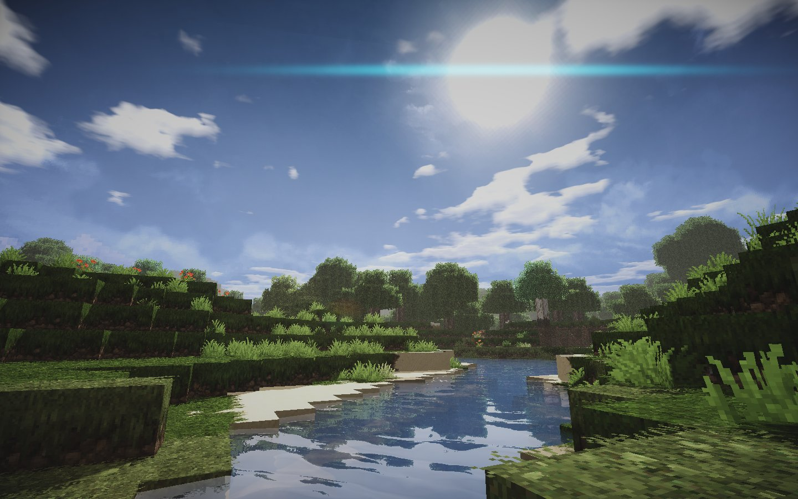
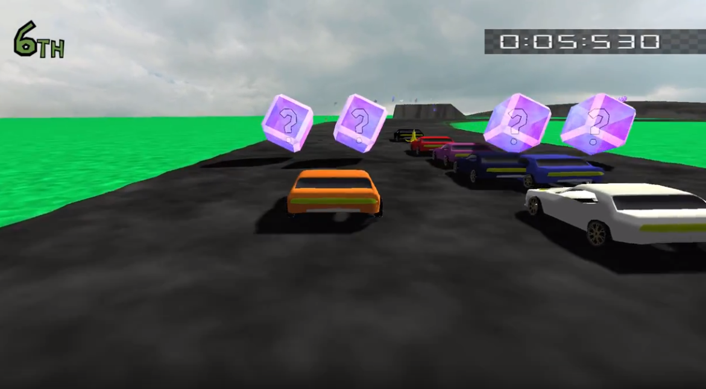
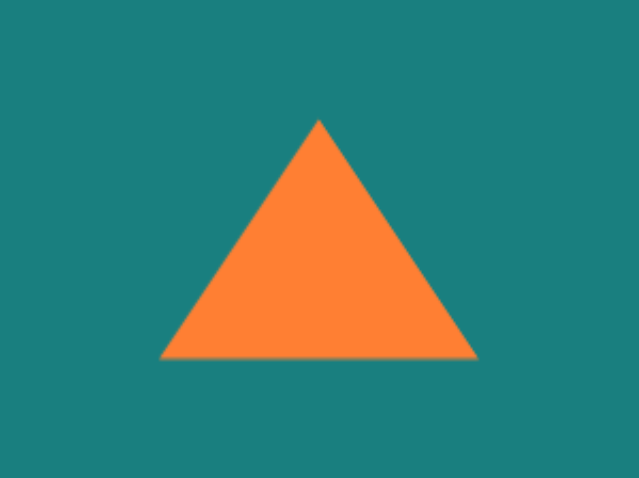

Shaders in OpenGL
They draw pictures and stuff

My Background
Learned shaders while taking a game architecture class

Where are shaders used?
OpenGL, Direct3D, Metal
- JOGL, WebGL
// Example JavaScript using WebGL
const canvas = document.createElement("canvas");
const gl = canvas.getContext("webgl");
...
gl.bufferData(
gl.ARRAY_BUFFER,
new Float32Array([-1.0, 1.0, 1.0, 1.0, -1.0, -1.0, 1.0, -1.0]),
gl.STATIC_DRAW
);
...
gl.drawArrays(gl.TRIANGLE_STRIP, offset, vertexCount);
The Pipeline
You upload the shaders you want along with the vertex data

The Vertex Shader

const positions = [
-0.5, -0.5, 0.0, // bottom-left
0.5, -0.5, 0.0, // bottom-right
0.0, 0.5, 0.0 // top
];
const vertexShaderCode = `
attribute vec4 vertexPosition;
uniform mat4 worldPosition;
uniform mat4 cameraMatrix;
void main() {
gl_Position = cameraMatrix * worldPosition * vertexPosition;
}
`;
The Fragment Shader
Phong lighting model
attribute vec3 position;
attribute vec3 normal;
uniform mat4 projection, modelview, normalMat;
varying vec3 normalInterp;
varying vec3 vertPos;
uniform vec3 lightPos; // Light position
void main(){
vec4 vertPos4 = modelview * vec4(position, 1.0);
vertPos = vec3(vertPos4) / vertPos4.w;
normalInterp = vec3(normalMat * vec4(normal, 0.0));
gl_Position = projection * vertPos4;
vec3 N = normalize(normalInterp);
vec3 L = normalize(lightPos - vertPos);
// Lambert's cosine law
float diffuseAngle = max(dot(N, L), 0.0);
float specular = 0.0;
if(diffuseAngle > 0.0) {
vec3 R = reflect(-L, N); // Reflected light vector
vec3 V = normalize(-vertPos); // Vector to viewer
// Compute the specular term
float specAngle = max(dot(R, V), 0.0);
specular = pow(specAngle, shininessVal);
}
vec3 diffuseColor = diffuseAngle * vec3(0, 0, 1)
vec3 sepcularColor = specular * vec3(0, 0, 1)
color = vec4(ambientColor + diffuseColor + sepcularColor , 1.0);
Fun with shaders
Multipass rendering
- water
- shadows
- transparency
- motion blur